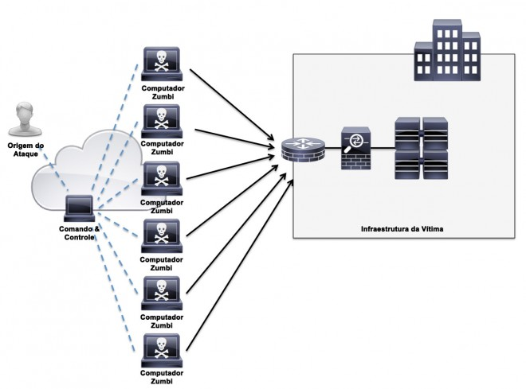
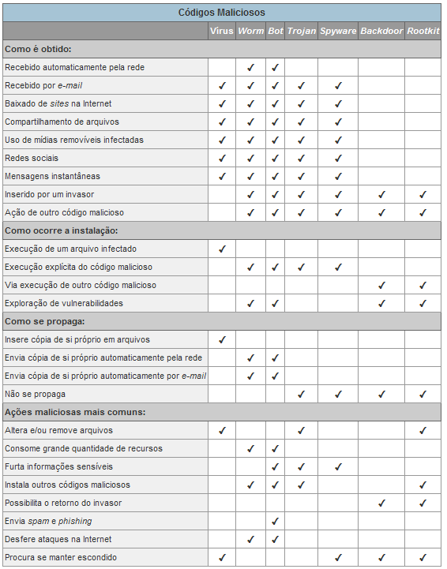

Disciplinas
Segurança da Informação. Concluído
Materiais
[UFMS Digital] Segurança da Informação - Módulo 3 - Unidade 2
Prof° ministrante: Dionisio Machado Leite Filho.
Ameaças.
- Ameaças - qualquer causa potencial de um incidente indesejado que, caso se concretize, possa resultar em dano aos dados de um computador.
- Exploram as falhas de segurança - software e hardware.
- Vazamento de informações; Violação de integridade; Indisponibilidade de serviços; Acesso e uso não autorizado.
Exemplo: Negação de serviço.

Vírus..
- As ameaças podem ser em nível de infraestrutura ou lógicos.
- Um vírus é um pequeno programa escrito com o objetivo de alterar a forma como um computador opera, sem a permissão ou o conhecimento do usuário.
- Normalmente: autoexecutáveis, associa-se a outro programa normal, se autorreplica.
- Normalmente exige um processo, ou mecanismos de entrega.
- Vírus necessitam da interação humana.
Exemplo - vírus
# /bin/sh ;
Touch dados.dat ;
Touch system.dat ;
Echo “hacker” >> dados.dat;
While [ 1 = 1 ] ;
Do ;
Cat dados.dat >> system.dat;
Cat system.dat >> dados.dat;
Done;
Trojan.
- Programas impostores ou arquivos que se passam por um programa desejável.
- Trojan se difere do vírus em relação à automultiplicação.
- Para que um cavalo de troia possa se espalhar, o próprio usuário deve instalá-lo no computador.
- Tipos de trojans: Trojan Downloader, Dropper; Backdoor; DoS; Destrutivo; Clicker; Proxy; Spy.
Worms.
- São programas que se duplicam, passando de um sistema para outro, sem utilizar um arquivo host (arquivo hospedeiro).
- Diferenciam dos vírus, que requerem a existência de um arquivo host (arquivo hospedeiro) infectado e que seja espalhado.
- Diferença no modo com que worms e vírus utilizam o arquivo hospedeiro.
- Malware - software malicioso.
Spywares.
- Programa para monitorar as atividades de um sistema qualquer e enviar as informações coletadas para outras pessoas.
- Pode ser usado tanto de forma legítima quanto maliciosa, dependendo de como é instalado, de quais ações são realizadas, do tipo de informação que é monitorada e do uso que é feito por quem recebe as informações coletadas.
- Legítimos: usado para monitorar se outras pessoas estão utilizando os recursos do computador de modo abusivo ou não autorizado.
- Maliciosos: executa ações que podem comprometer a privacidade do usuário e a segurança do computador e/ou de uma rede, como monitorar e capturar informações referentes à navegação do usuário.
- Keylogger: programa capaz de capturar e armazenar as teclas digitadas pelo usuário no teclado do computador.
- Screenlogger: capaz de armazenar a posição do cursor e a tela apresentada no monitor nos momentos em que o mouse é clicado.
- Adware: encher o browser de propagandas durante a navegação na internet.
Backdoor.
- Programa que permite o retorno de um invasor a um computador comprometido, por meio da inclusão de serviços criados ou modificados para este fim em uma invasão anterior.
- Pode ser incluído pela ação de outros códigos maliciosos, vírus que tenham previamente infectado o computador, ou por malwares, que exploram as vulnerabilidades existentes nos programas instalados no computador para poder invadi-lo.
Escopo geral das vulnerabilidades
